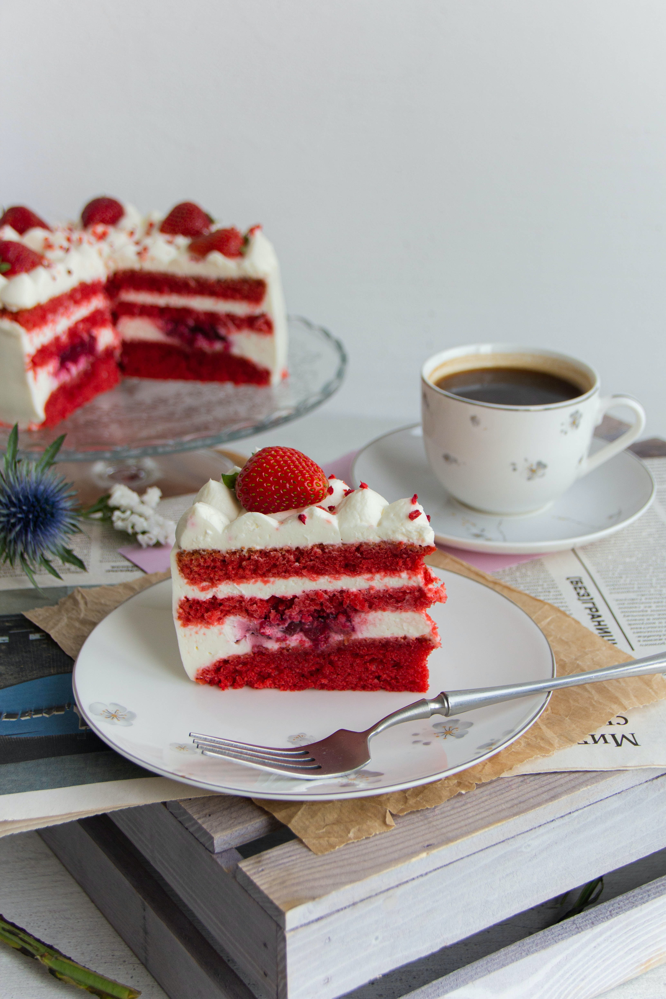

Red Velvet Cake

Description
Red velvet cake is a delectable and visually stunning dessert that has captivated taste buds worldwide. To create this luscious treat, you'll need to combine the usual cake ingredients: flour, sugar, eggs, butter, and buttermilk. However, what sets red velvet cake apart is the addition of cocoa powder and a hint of vinegar, which enhances its unique flavor profile. The key ingredient, responsible for its iconic crimson hue, is a touch of red food coloring. Once the batter is mixed to perfection, it's poured into cake pans and baked to a tender, moist texture. The final touch is a luxurious cream cheese frosting, generously spread between layers and over the top. With its rich taste and velvety texture, red velvet cake is a delightful indulgence that is perfect for any celebration or simply satisfying your sweet cravings.
Ingredients Required
- All-purpose flour: Provides the base structure and texture for the cake.
- Granulated sugar: Adds sweetness and helps create a tender crumb.
- Eggs: Act as a binding agent, providing structure and stability to the cake.
- Unsalted butter: Contributes richness and flavor to the cake.
- Buttermilk: Gives the cake its characteristic moistness and tangy taste, while also reacting with the other ingredients to enhance the cake's texture.
Preparation Procedure
- Preheat the oven to 350°F (175°C) and prepare two 9-inch round cake pans.
- Mix dry ingredients: Sift flour, cocoa powder, and salt in a bowl.
- Cream butter and sugar, then add eggs and vanilla.
- Alternate adding dry ingredients and buttermilk to the wet mixture. Stir in red food coloring, vinegar, and baking soda.
- Divide batter into cake pans and bake for 25-30 minutes. Let cool, frost with cream cheese frosting, and enjoy!